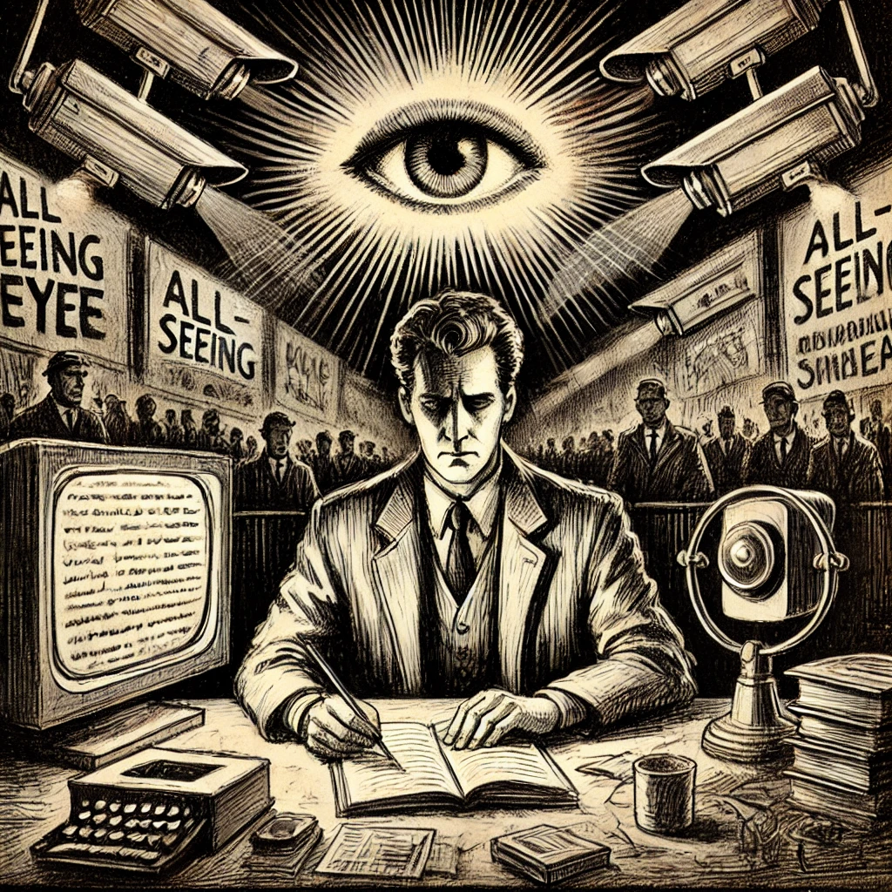

Author
조지 오웰
Published Date
1949
감상평에 대한 AI그림
조지 오웰의 1984는 디스토피아적 사회를 배경으로 한 소설로, 주인공 윈스턴 스미스라는 남성을 통해 전체주의와 개인의 자유에 대한 내용을 다룬다. 또한 이 책은 진리와 현실, 그리고 상대성이라는 주제를 다루며 진리라는 개념이 권력에 의해 어떻게 재정의될 수 있는지를 보여준다.
나는 소설을 통해 개인의 자유가 얼마나 쉽게 파괴될 수 있는지, 그리고 억압적인 체제에 대한 저항이 얼마나 힘든지에 대한 강렬한 인상을 받으며 오늘날의 사회에서 정보의 통제가 줄 수 있는 영향을 다시 한번 생각하게 되었다.

감상평에 대한 AI평가
이 감상평은 상당히 심오하고 진지한 감정을 표현하고 있습니다. 감상자는 1984를 통해 개인의 자유와 권력, 정보 통제에 대한 중요한 메시지를 강하게 느꼈고, 그로 인해 현대 사회에 대한 경각심과 고민을 나타내고 있습니다. 전체주의 체제와 억압적인 사회 구조에 대한 경고가 강조되며, 그것이 오늘날에도 여전히 중요한 이슈로 다가온다는 점을 깊이 인식하고 있음을 보여줍니다.
감정적으로는 불안과 경계심, 그리고 어떤 형태의 경고적 감정이 돋보입니다. 이 감상평은 사회적 현실을 비판적으로 바라보는 사고를 자극하며, 독자가 이 문제에 대해 더 많이 생각해볼 수 있도록 만드는 힘이 있습니다.